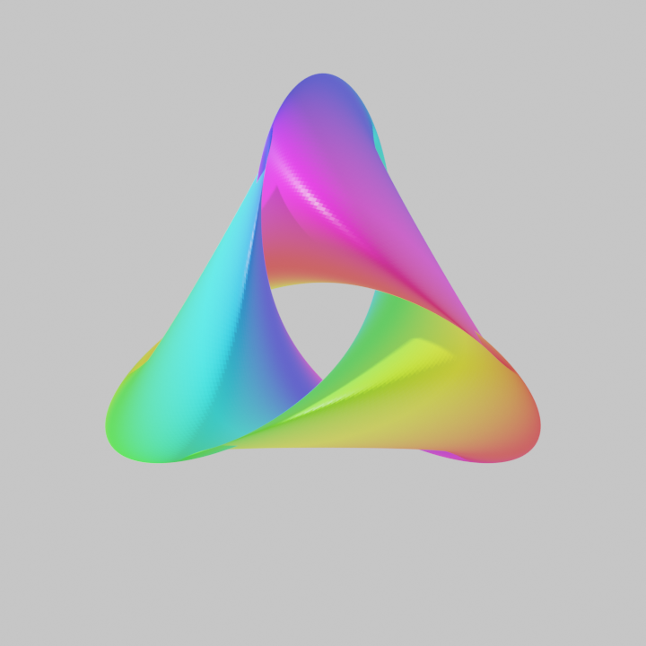
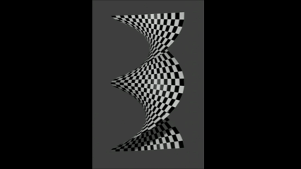

- 氏名：山内 優太（やまうち ゆうた）
- 所属：横浜国立大学 大学院理工学府
数物・電子情報系理工学専攻
数学教育分野
- 身分：博士後期課程3年
- メールアドレス：yamauchi-yuta-hj@ynu.jp
- 分野：微分幾何学，特に大域的微分幾何学に強い関心があります．現在は絶対全曲率やChern-Lashofの定理などを研究しています．
- 現在、 関東若手幾何セミナーの世話人をしております．講演希望等ございましたらご連絡ください．
講演リストはこちら
論文リストはこちら
学歴・受賞歴等はこちら

←ギャラリー（gif画像をクリック）